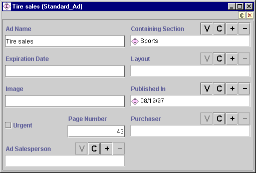
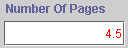
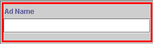

The Instances form can be used to define and edit the slot attributes of
the instance selected in the Direct Instances pane. If a single class is selected, the
Instances form is displayed
at the right of
the Instances tab. The Instances form is also displayed separately
in a free-standing window whenever you click on the View  Instance button in the Direct Instances pane. Whenever you enter changes into the
Instances form, they take effect
immediately. To make the changes permanent, select Save from the Project menu.
Instance button in the Direct Instances pane. Whenever you enter changes into the
Instances form, they take effect
immediately. To make the changes permanent, select Save from the Project menu.

For each slot in the instance, the Instances Form displays a field where you can enter the information for that slot. The display and options for the field depend on the type of information that is included in the field.
If the type of information you enter is not appropriate for the slot, the entry will be shown in red when you leave the slot. For example, entering a decimal number in an integer slot is not allowed. Values that violate other slot conditions, such as values less than the minimum or greater than the maximum, will also be shown in red.

If a value is required for the slot and there is currently no value, the field is outlined in red.

The note icons, 
 , at the upper right
of the form allow you to add and remove yellow sticky notes to your class. The
note is always displayed along with the form. For information on how to add
notes to any frame (class, instance, or slot), see Working with
Notes.
, at the upper right
of the form allow you to add and remove yellow sticky notes to your class. The
note is always displayed along with the form. For information on how to add
notes to any frame (class, instance, or slot), see Working with
Notes.
Next: The Field Buttons